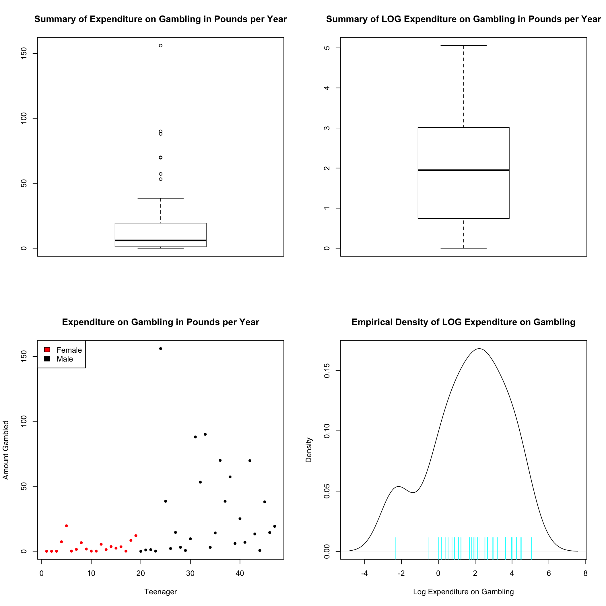
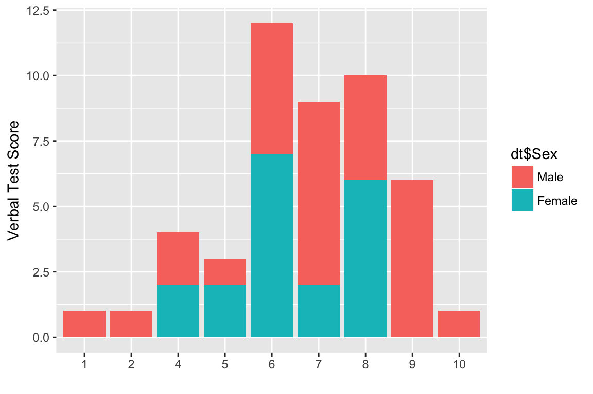
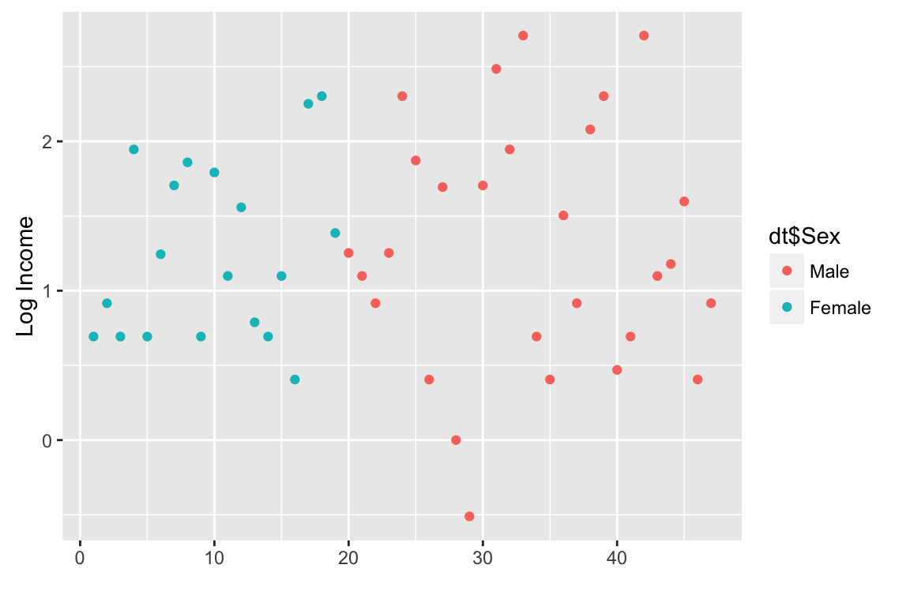
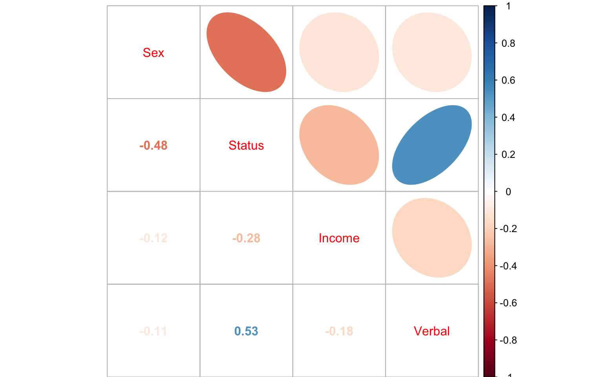

The following document provides a quick snapshot of the teengable data-set. This data contains observations on 47 different teenagers from the UK spending on gambling in one year, as well as variables characterizing these subjects. Amount Gambled is considered as the response variable Y in this data, with the rest of the variables acting as covariates X.
Amount GambledFirst we produce a summary of the Amount Gambled. In the summary notice that the mean of 19.3 is more that 3 time that of the median. In fact the mean is almost equal to the 4th quantile, indicating that almost 75% of the observations are below the mean. This suggests that the distribution of data is skewed, and might require a transformation.
library(faraway)
data(teengamb)
summary(teengamb$gamble)## Min. 1st Qu. Median Mean 3rd Qu. Max.
## 0.0 1.1 6.0 19.3 19.4 156.0In the top two plots we see a graphical representation of the numeric summary. First plot uses the raw data, and suggests that there are outlieres. The second plot uses the log scale, which normalizes that data and suggests no outlieres. Thus the log transformations seems appropriate.
par(mfrow = c(2,2))
boxplot(teengamb$gamble, main = "Summary of Expenditure on Gambling in Pounds per Year")
boxplot(log(teengamb$gamble+1), main = "Summary of LOG Expenditure on Gambling in Pounds per Year")
plot(teengamb$gamble, col = factor(teengamb$sex),main = "Expenditure on Gambling in Pounds per Year", xlab = "Teenager", ylab = "Amount Gambled", pch = 20)
legend("topleft", fill = 2:1, legend = c("Female","Male"))
plot(density(log(teengamb$gamble)), main = "Empirical Density of LOG Expenditure on Gambling", xlab = "Log Expenditure on Gambling")
rug(log(teengamb$gamble), ticksize = 0.1, lwd=1, col = 5)
In the bottom two plots displayed above further explore Amount Gambled. The dot plot reveals two things. 1st, the data might suggest that females gamble less, and that some males gamble significantly more than others. 2nd, there are a number of subjects that don’t gamble at all; this means that the log transformation needs to be modified such that no log(0) computations are attempted. The second plot shows the empirical distribution of the transformed data, which resembles a normal distribution. This is good news, since this is what we desire for a response variable.
We have 4 covariats, two categorical (Sex, Verbal) and two continuous (Income,Status). From the summary we see that for the continuous covariates the distributions are more or less symmetric. We also see that there are 9 more males so the sample is not quite balanced. To explore the Verbal factor we plot a histogram, and further fill by Sex. We see two things here: 1st, verbal test scores are skewed towards higher scores. 2nd, the best and the worst scores are both observed from the male population. This might suggest that male test scores are more variable, though the sample is unbalanced and such a hypothesis would require testing.
library(ggplot2)
dt <-data.frame(factor(teengamb$sex),teengamb$status, teengamb$income, factor(teengamb$verbal))
levels(dt$factor.teengamb.sex.) <- c("Male","Female")
colnames(dt) <- c("Sex","Status","Income","Verbal")
summary(dt)## Sex Status Income Verbal
## Male :28 Min. :18.00 Min. : 0.600 6 :12
## Female:19 1st Qu.:28.00 1st Qu.: 2.000 8 :10
## Median :43.00 Median : 3.250 7 : 9
## Mean :45.23 Mean : 4.642 9 : 6
## 3rd Qu.:61.50 3rd Qu.: 6.210 4 : 4
## Max. :75.00 Max. :15.000 5 : 3
## (Other): 3dtt <-data.frame(teengamb$sex,teengamb$status, teengamb$income, teengamb$verbal)
colnames(dtt) <- c("Sex","Status","Income","Verbal")
corr <- cor(dtt)
qplot(dt$Verbal, fill = dt$Sex, ylab = "Verbal Test Score", xlab = "")
From the second plot we see again that among the males these seems to be more variability in Income on the log scale.
qplot(1:length(log(dt$Income)),log(dt$Income) , col=dt$Sex, ylab = "Log Income", xlab = "")
Next we look at the correlation among the covariates themselves. We are hoping for low covariances, because high covariance among pairs of covariates might suggest that they carry the same information and only one should be used for modeling. In the plot we see that Status and Income are positively correlated with a coefficient slightly above 0.5. While not dramatic, this calls for attention during the modeling stage of analysis.
library(corrplot)
corrplot.mixed(corr, upper = "ellipse")